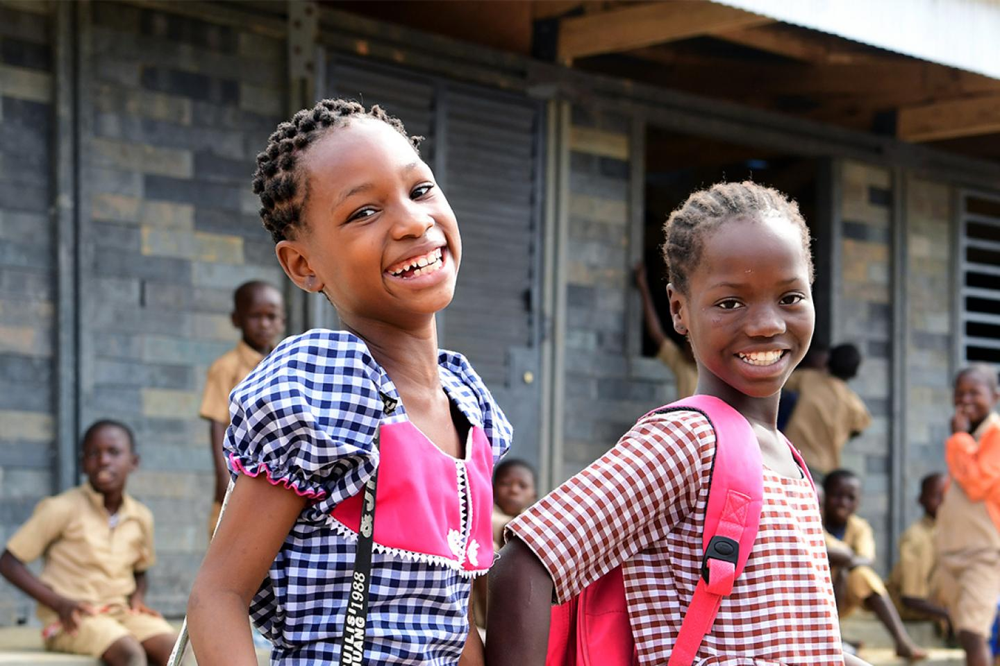

Why donate to UNICEF? It's a smart way to make your money go further for children:
knows connectivity is power The Giga Initiative, UNICEF and the International Telecommunication Union’s collaboration to connect every school to the internet, expanded to over 86,000 schools and more than 25.8 million students
and teachers in 2020. UNICEF also signed agreements with mobile network operators in 94 countries to provide millions of learners free access to online educational content
UNICEF supports girls’ rights and their futures: In 2020, UNICEF helped over 14 million girls enroll in early learning, primary or secondary education
UNICEF supports teachers, too: UNICEF and Microsoft's Learning Passport was adapted to offer lessons in sign language, COVID-19–prevention teacher training and resources on gender equality, sexuality education and violence
against women and girls
UNICEF is bridging the digital divide: Helping children feel prepared and empowered to learn is a big part of UNICEF’s work. Last year, 43.4 million children received learning materials
UNICEF is bridging the digital divide: 2.8 million households benefited from cash assistance to meet families’ basic needs and relieve the economic pressures that can force children to go to work — not school
UNICEF levels the playing field: knows connectivity is power
UNICEF prioritizes the education of children with disabilities: Teacher training has helped make inclusive education a reality for children with disabilities in 54 percent of the countries where UNICEF works

Visit our others pages
A lot of interest things to learn in our other pages about UNICEF